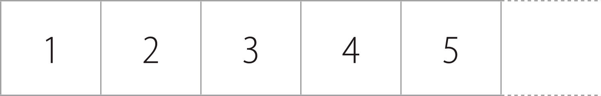
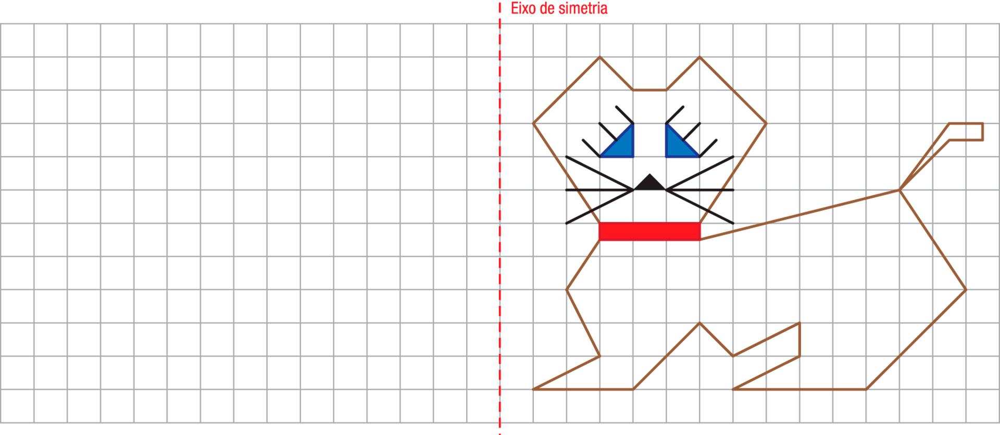
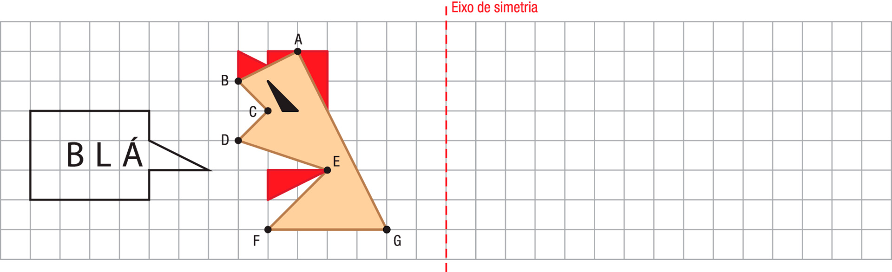
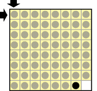

As simetrias estão em todos os lugares, inclusive na arte. Observe cada obra a seguir. Depois, identifique, registre e justifique o tipo de simetria existente nelas
a) Esta é uma obra de Waldemar Cordeiro, que, além de pintor, atuou como ilustrador, urbanista, jornalista e crítico de arte. Nascido em Roma, mas com cidadania também brasileira, foi
inicialmente um forte defensor da corrente concretista, a qual buscava defesa da lógica e de formas precisas, mas posteriormente passou a desenvolver uma arte menos utópica e mais próxima da realidade humana.
Simetria:
Justificativa:
b) A arte de Escher começou a ganhar forma após ele realizar, na juventude, muitas viagens à Itália e à Espanha, quando entrou em contato com belas paisagens em Florença e construções de
arquitetura do antigo Império Mouro, baseadas em simetrias geométricas, em Granada.
Simetria:
Justificativa:
c) Rogério Dias é considerado um dos grandes nomes contemporâneos do Brasil. Nascido em Jacarezinho, PR, é um artista autodidata, que já trabalhou como desenhista, escultor, designer
gráfico, cartunista, decorador e ilustrador, dedicando-se, hoje, exclusivamente à pintura.
Simetria:
Justificativa:
Complete e pinte as figuras considerando o eixo de simetria indicado.
a)
b)
c)
Nestes planos cartesianos, o polígono ABCDE sofreu algumas transformações. Observe-as:
a) O polígono GFCIH representa que movimento de simetria em relação à ABCDE? Explique sua resposta.
b) O polígono GFCIH representa que movimento de simetria em relação à ABCDE? Explique sua resposta.
(PISA) Na margem do rio fica uma roda-gigante. Veja a foto e o diagrama abaixo.
A roda-gigante tem um diâmetro de 140 metros e o seu ponto mais alto está a 150 metros acima do leito do rio, em uma das margens do rio. Ela gira na direção indicada pela seta. A roda-gigante gira em velocidade constante. A roda
faz uma rotação completa em exatamente 40 minutos. João inicia o passeio na roda-gigante na plataforma de embarque P. Onde João estará depois de meia hora?
Trasladando o peixe amarelo, desenhe 3 outros no plano cartesiano, conforme as indicações a seguir.
Peixe 1: 7 unidades à direita.
Peixe 2: 4 unidades acima.
Peixe 3: 6 unidades à direita e 3 unidades acima.
(OBMEP) Um triângulo equilátero ABC gira uma vez em torno do vértice C e outra vez em torno do vértice B, sempre se apoiando em uma reta, como na figura ao lado. Qual das
alternativas representa a trajetória descrita pelo ponto A?
(OBMEP) A figura mostra parte de uma tira retangular de papel dividida em quadradinhos numerados a partir de 1. Quando essa tira é dobrada ao meio, o quadradinho com o número 19 fica em cima do que tem o número 6. Quantos são os
quadradinhos?

Em cada item, obtenha a figura simétrica em relação ao eixo indicado.
a)

b)

(OBMEP) Joãozinho tem um tabuleiro como o da figura, no qual há uma casa vazia, uma casa com uma peça preta e as demais casas com peças cinzentas. Em cada movimento, somente as peças que estão acima, abaixo, à direita ou à esquerda
da casa vazia podem se movimentar, com uma delas ocupando a casa vazia. Qual é o número mínimo de movimentos necessários para Joãozinho levar a peça preta até a casa do canto superior esquerdo, indicada pelas setas?

(OBMEP) A figura ao lado mostra a superfície de um azulejo em forma de losango. Dos cinco padrões abaixo, apenas um não pode ser montado com cópias desse azulejo. Qual é esse padrão?